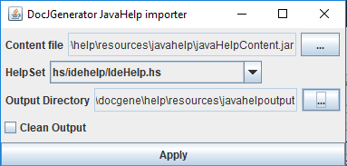

Home
Categories
Dictionary
Download
Project Details
Changes Log
What Links Here
How To
Syntax
FAQ
License
Importing JavaHelp content
It is possible to convert a JavaHelp content (stored in a jar file) to the docJGenerator Help content format to use it in the Help system.
A zip file named
These errors can arise when trying to import JavaHelp content.
Usage
ThejavaHelpImporter.jar tool allows to convert the JavaHelp content to the docJGenerator Help content:- The content file is the Jar file containing the JavaHelp content
- The HelpSet is the HelpSet entry containing the javaHelp master HelpSet[1]
Note that if there is only one HelpSet in the Jar file, this helpSet will be selected automatically
- The Output Directory is the directory where to generate the docJGenerator Help content
|
 |
|
|
A zip file named
JavaHelp.zip will be automatically generated alongside the Output Directory.
Features
- The generator will take care of multiple mapIDs files
- The generator will take care of multiple toc files
- The index will be created automatically with the content of the mapIDs files and toc files
Import errors
Main Article: Import JavaHelp errors list
These errors can arise when trying to import JavaHelp content.
Notes
- ^ Note that if there is only one HelpSet in the Jar file, this helpSet will be selected automatically
See also
- Help system: This article explains how to use the JavaHelp-like feature of the tool
- Comparison with JavaHelp: This article compares the help feature of docJGenerator with the JavaHelp system
- Import JavaHelp errors list: This article presents the list of errors which can be emitted when importing JavaHelp content
×

Categories: JavaHelp